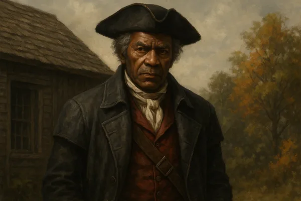

Release Date
November 11, 2014
Platforms
PC, PS3, Xbox 360
Setting
North Atlantic
Era
1752-1761 AD
A Betrayal from Within
Play as Shay Patrick Cormac, a former Assassin turned Templar, in a story of betrayal, ideology, and loyalty. Assassin's Creed: Rogue delivers a fresh perspective, showing the conflict through the eyes of a Templar while exploring the icy North Atlantic and vibrant River Valley.
Story Highlights
- Experience the Assassin-Templar war from the Templar perspective
- Witness Shay's transformation from Assassin to Templar hunter
- Connect the stories of AC3, Black Flag, and Unity
- Navigate the frozen North Atlantic and River Valley
Core Features
Templar Perspective
Experience the Assassin-Templar conflict from the other side.
Naval Combat Returns
Command your ship, the Morrigan, in Arctic naval battles.
Icy Exploration
Traverse the frozen North Atlantic and hidden River Valley settlements.
Notable Characters

Shay Cormac

Haytham Kenway

Achilles Davenport
Gameplay Mechanics
Templar Hunter
Hunt down Assassins using new weapons like the air rifle and grenade launcher. Experience being stalked by Assassins in a thrilling role reversal that adds tension to every mission.
Arctic Naval Combat
Navigate treacherous icebergs and frozen waters aboard the Morrigan. Use new tactics like oil slicks and burning oil to defeat enemies in harsh Arctic conditions.
Game Gallery


Legacy & Impact
Assassin's Creed Rogue offered a unique perspective by letting players experience the conflict from the Templar side. Shay's moral journey and the game's darker tone provided fresh insight into the franchise's central conflict. The Arctic setting and improved naval mechanics built upon Black Flag's foundation, while the story directly connected to both AC3 and Unity, making it essential for understanding the Kenway saga.
Walk the Templar Path
Challenge your ideals, shape history, and embrace a darker legacy.
Play Now